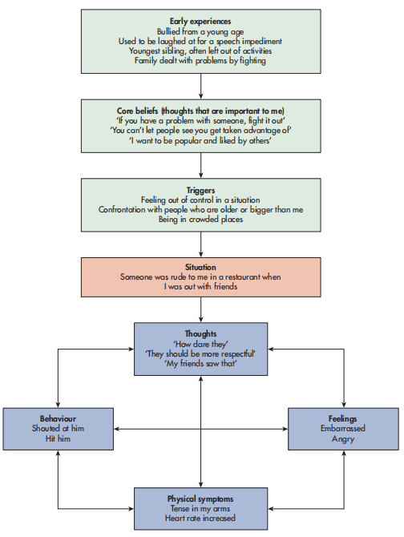

6.1.2–6.1.3 UNDERSTANDING THE OFFENDER
Cognitive interview · Psychological (case) formulation · 认知访谈与个案概念化
Learning Objectives 学习目标
- Say why interview accuracy matters: a flawed interview can end in a wrongful conviction or an acquittal.
- Name and apply the four techniques of the cognitive interview — and match each pair to the memory theory that powers it.
- Cite the evidence both ways: Geiselman's 41.15 vs 29.40, Fisher's 47 per cent gain, Köhnken's meta-analysis — and the limits from Memon and Dando.
- Tell the cognitive interview from the enhanced version: same techniques, added witness support.
- Describe a formulation in two phases and use "contingencies" and "criminogenic factors" without mixing them up.
What this chapter is really asking
- Two different jobs for two different people. The cognitive interview gets accurate information from a witness at the police station; a psychological (case) formulation makes sense of one convicted offender's pathway into crime.
- The cognitive interview is built on two memory theories. Bartlett's reconstructive memory explains why schemas distort testimony; Tulving's context-dependent memory explains why reinstating context works as a cue.
- Four techniques, one order: reinstate the context, report everything, change the order, change the perspective. Know what each prevents.
- The evidence is strong but mixed. Geiselman et al. (1985) and Köhnken et al. (1999) show more correct recall; Memon et al. (1997) shows more errors too; Dando et al. (2008) shows street-level barriers.
- A formulation has two phases. Offence analysis collects the facts (contingencies and criminogenic factors); case formulation applies psychological theory to explain the function of the offending and plan treatment.
1. Getting Started — Interview the Bank-Robbery Witnesses
The opening scenario: a bank robbery in daylight. Masked robbers in dark clothing herd customers and staff to the back of the bank, a ringleader commands the scene, the vault is emptied, and the criminals disappear on foot within minutes. Police arrive and gather the witnesses.
Your task
- Write down seven questions you would ask the witnesses about the crime.
- Review them: would any question mislead the witness or activate schemas that alter their answers? For example, "Was the ringleader tall and threatening?" plants features the witness never reported.
- Rewrite the weak questions so they draw out memory instead of feeding it.
诱导性问题的共同点是把答案塞进问题里：「为首的是不是又高又凶？」听过的人记忆里就多出一个高个子头目。安全的问法只给空格不给内容：「描述为首的人」。这一章的认知访谈四技术，本质就是把「不给内容、只给线索」做成一套标准流程。另外回忆有第一个人填错就会被后面的人跟着错的连带风险，所以课后证人之间的闲聊也是污染源。
🤔 Quick decisionThink first
Which question is the safest to ask a witness?
2. Why Interview Accuracy Matters
The stakes are concrete. If inaccurate information is taken during a police interview, the wrong person may be charged, leading to a wrongful conviction while the actual offender gets away with the crime. Or an offender may have to be acquitted（被判无罪释放） because their testimony is found to be unreliable.
Before the cognitive interview, standard interviewing consisted of "who, what, when, where?" type questions, with the interviewer directing the flow of the conversation. Psychologists worked with the police to develop the cognitive interview using their knowledge of how memory works.
Standard interview 标准访谈
- Short, closed questions aimed at specific facts
- The interviewer controls the flow of the conversation
- Invites schema-filling: the witness answers the frame the officer offered
Cognitive interview 认知访谈
- Built on how memory actually works, by psychologists collaborating with police
- The witness leads, with free recall and open questions
- Designed to maximise accuracy, not speed
后果很直白：证词错了，好人被定罪、真凶逍遥法外，或者被告因为证词不可靠被释放。所以访谈不是走过场，它是整条证据链的第一环。对比标准访谈抓一句核心：标准访谈是警官带着节奏问，认知访谈是证人带着节奏讲：谁主导，谁的记忆就被谁的方向塑形。
3. Two Memory Foundations
The cognitive interview is based on two principles of cognitive psychology:
- Memory for an event is not a faithful account of what was witnessed (Bartlett's 1932 reconstructive memory theory). We rebuild the event each time we recall it, and schemas（图式：脑中现成的预期剧本） fill the gaps with expectations rather than facts.
- When we experience an event we encode the details of the environment and our emotional state (Tulving's 1974 context-dependent memory): sights, sounds, smells and how we felt. Reinstating that context or state can act as a cue to the memory.
配对关系记牢：重建记忆解释了为什么要换顺序、换视角，因为顺着讲会套进现成剧本，让图式替你编故事；情境依存记忆解释了为什么要重建情境，因为天气、声音、情绪这些细节当年一起编码，还原它们就能当提取线索。「报告一切」则同时吃两个理论的红利：细节再小也可能是钥匙线索。这层配对关系想通了，四条技术就不再是四句孤立的口令。
🤔 Quick checkThink first
Which theory explains why recalling events in a different order improves testimony?
4. The Four Techniques
Four main techniques are used within the cognitive interview, as guided by Geiselman et al. (1985). Each one targets a specific way that normal recall goes wrong.
Wording care on technique 4
When changing perspective, it must be made clear that the witness only reports what they know, and not what they think the other person would have seen. Otherwise the technique itself invites speculation.
别背成干巴巴的四句话，每招配一个「堵什么」：重建情境堵「提取缺线索」，报告一切堵「证人自以为不重要的细节被丢掉」，换顺序堵「顺着讲故事时图式补空白」，换视角堵「只从自己角度想当然」。换视角有一条安全绳要记住：只报告自己知道的，不许猜别人看见了什么：一旦开猜，技术自己就变成了诱导。
5. Running the Interview and the Enhanced CI
The procedure in sequence
- Establish a good rapport（信任关系：让证人放松、愿意开口的气氛） with the witness first.
- Encourage the witness to report everything without interruption, gaining an initial free-recall account.
- Then ask questions aimed at clarifying details from the testimony, using techniques such as mentally reliving the incident or recalling in a different order.
- Never ask leading questions that hint at a desired answer; ask open questions that encourage free recall.
The enhanced cognitive interview (Fisher and Geiselman, 1992)
Uses the same techniques as the cognitive interview but incorporates more. Its main aim is to support the witness through reliving the event and ask questions appropriate to the witness's intellectual level while minimising distractions. Phase one establishes a personal connection before the witness reports everything. Open questions are adapted to the witness's social and cultural background. The approach is intended to be witness-led rather than controlled by the interviewer, but it requires significant training in interpersonal skills.
顺序记四步：先建信任 → 自由陈述不打断 → 针对细节追问 → 全程开放式问题。增强版多的是「以人为本」这层：按证人的理解力和文化背景调整问法，减少干扰，让证人主导。它对警官的人际技能要求很高，这是推广时的现实代价。
🤔 Quick checkThink first
What is the key difference between the cognitive interview and the enhanced cognitive interview?
6. CI Evaluation — What the Studies Show
Geiselman et al. (1985): the classic comparison
The setup
89 undergraduates from the University of California watched a film of a violent crime lasting around four minutes: a bank robbery, a liquor store holdup, a family dispute or a warehouse search, in which at least one individual was shot and killed. Each was interviewed by one of 17 interviewers recruited from police detectives, CIA investigators, polygraph specialists（测谎专家） and private detectives, all of whom had completed a forensic hypnosis course with field experience on hundreds of cases. After 48 hours, participants were interviewed with one of three techniques: standard interview, hypnosis, or the cognitive interview (all four techniques). Correct, incorrect and confabulated items were recorded. Confabulated means falsely recalled.
| Average number of items recalled | Hypnosis interview | Cognitive interview | Standard interview |
|---|---|---|---|
| Correct items | 38.00 | 41.15 | 29.40 |
| Incorrect items | 5.90 | 7.30 | 6.10 |
| Confabulated items | 1.00 | 0.70 | 0.40 |
Conclusion: recall with the cognitive interview was significantly better than with a standard interview (41.15 vs 29.40 correct). Hypnosis may have worked because it also encouraged mentally recreating the context. There was no significant difference in errors between interview types, suggesting the memory techniques facilitated better recall.
The wider evidence
Supporting evidence
- Fisher et al. (1989): after training, detectives gained as much as 47 per cent more useful information from witnesses to real crimes compared with untrained officers, so the effect holds in ecologically valid settings.
- Köhnken et al. (1999): a meta-analysis of 42 studies (55 comparisons, 2,447 interviews) found the cognitive interview yielded significantly more correct details than the standard interview, and although more incorrect details were also reported, the overall accuracy rate was no worse.
- Holliday (2003): with children aged 4–5 and 9–10, the cognitive interview yielded more correct information from older children, and older children who had undergone it were less influenced by later misleading information, as if the interview inoculated the memory（像给记忆打了疫苗，有了抵抗力）.
Limiting evidence
- Dando et al. (2008): a survey of 221 less experienced police officers found the benefits are not equally perceived, officers felt inadequately trained, and time constraints prevented use in real situations; chaotic crime scenes need immediate information to catch the perpetrator, which a full CI cannot deliver.
- Memon et al. (1997): participants recalled more about a shooting clip but also made more errors and confabulated details; asking for another perspective may produce speculation despite instructions.
- Age limits: very young children may struggle with techniques such as changing perspective, and further research is needed on whether all four components are needed.
- Lab artificiality (science debate): controlled films of crimes remove real-life variables, so findings may differ from real crimes.
数据表先锁死：认知访谈 41.15 对标准访谈 29.40，错误数没差多少，所以涨的是「量」而不是「猜」。评价走两条线：支持线是真实案件里多拿 47% 信息加 42 项研究的元分析；受限线是 221 名警员说时间不够、训练不足，Memon 又发现信息多了错误也多了。两条线合起来读：认知访谈确实让人拿到更多，但拿到多不等于拿得准。
🤔 Quick checkThink first
Köhnken et al. (1999) found the cognitive interview produced more incorrect details as well as more correct ones. Why is this still counted as a strength?
7. Psychological (Case) Formulation
The psychologist's role here is often that of a consultant: indirectly observing and reviewing the work of other professionals such as the police, or speaking to the offender directly to find out what influenced them to act as they did. Psychologists are asked why an individual committed a crime, both during the court process (was the individual capable of committing the offence, and what is their risk of reoffending?) and after conviction (what rehabilitation（矫治） or treatment is appropriate, and is the person safe to be released into the community?).
Think of it as building a personal story of the offender so the psychologist can see how everything links to the offending. A formulation draws on all available psychological theories, and any psychological treatment is based on one: the treatment aims to build skills in the areas where the formulation shows support is needed. New information is added to the formulation as it arrives. There is no single fixed way to conduct one, but it is typically done in two phases: offence analysis, then the case formulation itself.
概念化像是给这个人写一份完整小传：把关系、生理和社会处境这些背景放在一起，再看他经历过哪些人生大事、他自己又是怎么解释这些事的，四样都要，最后回答一个问题：这次犯罪对他起了什么作用？它是治疗的地基，治疗就是照着小传里的短板练技能。用途三条分开记：判案时评估犯案能力与再犯风险，定罪后决定矫治方案与能否放回社区，治疗中作为方案依据。
🤔 Quick decisionThink first
Is a psychological formulation used to catch an unknown offender, like a detective profile?
8. Phase One: Offence Analysis and Criminogenic Factors
Offence analysis assesses the offender to understand their motivation for committing the crime. It works by finding similar offences committed by different offenders to uncover patterns or commonalities（共性：几起案子重叠的特征） that give insight into motives.
Offence analysis also involves interviewing the offender about the social and psychological factors that contributed to the criminal behaviour. Identifying these factors helps assess the risk of reoffending and develop interventions that break the cycle of offending. A worked example (Figure 8.1) shows how the layers combine in one assault case:
| Layer | Content in the example |
|---|---|
| Early experiences | Bullied from a young age; laughed at for a speech impediment; youngest sibling left out of activities; family dealt with problems by fighting |
| Core beliefs | "If you have a problem with someone, fight it out"; "You can't let people see you get taken advantage of"; "I want to be popular and liked by others" |
| Triggers | Feeling out of control; confrontation with people who are older or bigger; being in crowded places |
| Situation | Someone was rude to me in a restaurant when I was out with friends |
| Thoughts | "How dare they"; "They should be more respectful"; "My friends saw that" |
| Physical symptoms | Tense in my arms; heart rate increased |
| Feelings | Embarrassed; angry |
| Behaviour | Shouted at him; hit him |

这张表自下而上读才见功力：出手看起来是冲动，但童年被欺负、家里用打架解决问题养出了「被欺负就必须打回去」的核心信念，餐厅里被人当朋友面羞辱正好踩中触发条件，身体先紧、心跳加快，然后才有喊叫和那一拳。出手看似冲动，实则每一步都有来路。contingencies 和 criminogenic factors 要分清：前者是某类罪的常伴因素，后者是这个人身上的致罪因素。
🤔 Quick checkThink first
"Financial difficulties and substance abuse are common among people who commit theft." This statement describes:
9. Phase Two: Case Formulation and Its Evaluation
Once the offence analysis is compiled, psychological theory is applied to form a hypothesis about the criminal's motivation, presented as a summary that goes beyond listing factual criminogenic factors. The case formulation can identify potential risk, estimate the likelihood of reoffending, and recommend treatments, then be used to tailor a management and rehabilitation programme.
Which theories get applied
- Behavioural theory: criminal behaviour maintained through operant conditioning, for example gaining financial reward from theft.
- Cognitive theories: cognitive distortions that process information in a faulty way, such as minimising the severity of harm caused to the victim.
- Psychodynamic approaches: early childhood experiences form the basis of the formulation.
Evaluation
Strengths
- Detailed, multi-source insight. Information is gathered from many agencies: police, mental health professionals, forensic psychologists and probation officers, giving the best available basis for offender management and rehabilitation that reduces reoffending risk.
- It explains the person to themselves. Telling the offender what led to the offence helps them understand how to manage future situations, an important first step toward change.
- It improves staff knowledge of offenders, giving staff confidence in managing behaviour, and case studies such as Mr C (Whitehead et al., 2007) show behavioural theory linking criminogenic factors to rehabilitation and a more coherent sense of self with life goals.
Weaknesses
- Retrospective data is unreliable. Much information comes from the offender recalling past crimes and childhood, which depends on the accuracy of their memory.
- Interpretation introduces bias. The psychologist decides which information matters most, and their experience and training may push them toward a preferred theory.
- Effectiveness is hard to measure. Reoffending rates depend on detecting reoffending, but crime can go undetected, so we can really only measure reconviction.
- It is a snapshot. The formulation is conducted at one point in time, typically at conviction; circumstances may change and make it no longer relevant.
优点落在「信息全、能解释、能带队」：多机构供料所以细节丰富，能把犯罪功能讲给本人听所以促改变，还能提升狱警的理解与信心。软肋按来源记：材料靠回忆所以可能失真，解读靠心理学家所以可能带偏见，成效靠再犯率但漏罪抓不到，结论定在判决时点而人会变。Whitehead 等 2007 年的 Mr C 案例是单案支持证据，justify 时可以点它，但要记得个案研究不能推广。
10. Checkpoint
Check your understanding
1. Name the four techniques used in the cognitive interview. Which one is described here: "recall the event in reverse or a different sequence"?
2. The cognitive interview was designed from which two cognitive theories?
3. What is one weakness of using the cognitive interview in the field?
4. Which study found recall with the cognitive interview was significantly better than with a standard interview?
5. Is an offence analysis an objective account of an offender?
6. Are reoffending rates a good measure of the effectiveness of a formulation?
11. Exam Lab
Question 1 — Olivia and Rhys
Olivia has completed her police training, including how to conduct a cognitive interview. She must interview Rhys, a witness to a theft from a department store: he saw a woman running out of the store being chased by a security guard.
✍️ 1a — Discuss how Olivia could use the techniques8 marks
AO1: the cognitive interview (Fisher and Geiselman et al., 1984) is a way of questioning witnesses designed to maximise accuracy, based on reconstructive memory and context-dependent memory, using four techniques. Application: Olivia first builds rapport with Rhys and lets him give a free account of the theft without interruption (report everything). She then asks him to mentally recreate the store scene: what he could hear, the weather, how he felt (reinstate the context). She asks open questions that clarify details and never hints at answers, so she avoids leading questions like "Was the woman carrying a bag?". She may ask Rhys to recall events in a different order, for example from the moment the guard started chasing backwards to the theft itself, which interrupts schema-driven story filling (change the order). She could ask him to view the scene from the security guard's perspective while reporting only what he actually knows (change the perspective). AO3/evaluation: Geiselman et al. (1985) support the technique, since CI recall significantly exceeded standard interview recall; however Dando et al. (2008) note time constraints, so Olivia's first interview may need to be brief. Overall, the techniques should raise the amount of accurate information Rhys provides.
场景题的得分点是把每个技术落到 Rhys 身上：在商场里看到的具体情境怎么重建、偷窃事件怎么倒着回忆、从保安视角能看到什么。四招各配一句应用，开头一句定义，结尾挂一条 Geiselman 的证据再加一条时间限制的弱点，结构就满了。诱导问题的反例「那女人是不是拿着包」值得写进去，考官看得出你懂设计意图。
✍️ 1b — One strength and one weakness4 marks
Strength: the cognitive interview increases the amount of accurate information obtained: Geiselman et al. (1985) found significantly more correct items recalled than with a standard interview, and Fisher et al. (1989) found trained detectives gained 47 per cent more useful information from real-crime witnesses, so Rhys is likely to give Olivia more usable detail. Weakness: it takes time and training: Dando et al. (2008) surveyed 221 officers who felt inadequately trained and reported that time constraints prevented use in real situations, and a theft investigation may need immediate information, so a full cognitive interview may not be practical in Olivia's first contact with Rhys.
Question 2 — Darian's prison formulation
Darian works in a local prison and has been asked to carry out a case formulation on a prisoner being considered for release who has not been engaging in a treatment programme. He asks about the prisoner's childhood neglect and unstable current relationships, and finds out he has an addiction and was homeless before prison.
✍️ 2 — Explain how Darian may conduct the formulation3 marks
Darian starts with offence analysis: he gathers criminogenic factors by interviewing the prisoner, documenting childhood neglect, unstable relationships, addiction and homelessness. He then applies psychological theory to explain the function of the offending, for example a psychodynamic reading of early neglect or a behavioural reading of addiction-maintained offending, and uses the resulting case formulation to assess reoffending risk and recommend a treatment programme suited to the areas where the prisoner needs support.
第一句收集致罪因素（把题干给的四个背景全部点名为 criminogenic factors），第二句用心理学理论解释犯罪功能（心理动力或行为主义任挑一条接线），第三句落到用途（评估再犯风险、推荐匹配的治疗）。三句各占一分，不多写案例细节，把分数点顶到句首。